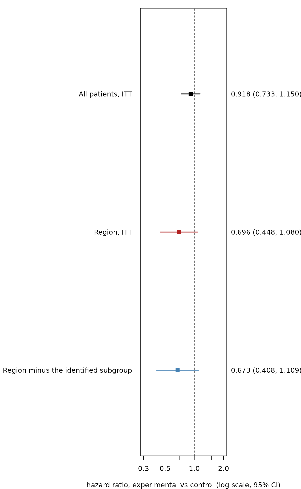

The four patient sets of a regional-consistency analysis
Source:R/mrct_four_sets.R
mrct_four_sets.RdFits the unadjusted two-sample Cox model on each set of the regional-consistency
analysis, from columns you name: all patients, the region, region(\(G^*\)) (the
region without the true harmed subgroup, when truth.name is given) and
region(\(\hat G\)) (the region without the subgroup \(\hat H\)). The sets and
their labels are those of mrct_case_study() and mrct_trial_analysis(), and
print() and plot() draw on the same code.
Usage
mrct_four_sets(
df,
outcome.name,
event.name,
treat.name,
region.name,
in_Hhat = NULL,
truth.name = NULL
)
# S3 method for class 'mrct_four_sets'
print(x, digits = 3, ...)
# S3 method for class 'mrct_four_sets'
as.data.frame(x, row.names = NULL, optional = FALSE, ...)
# S3 method for class 'mrct_four_sets'
plot(
x,
which = c("forest", "km"),
xlim = c(0.3, 2),
time_unit = NULL,
analysis_time = NULL,
...
)Arguments
- df
A data frame with one row per patient.
- outcome.name, event.name, treat.name
Columns: the time, the event indicator (1 = event) and the treatment (1 = experimental).
- region.name
The region column (1 = in the region, 0 = not).
- in_Hhat
Logical, one value per row: membership of \(\hat H\), for instance
get_dfpred(df, sg.harm = fit$sg.harm, version = 2)$treat.recommend == 0.NULL(the default) means nothing is declared: region(\(\hat G\)) is the whole region.- truth.name
Optional column of the true harmed subgroup (1 = in \(H^*\)). It adds the region(\(G^*\)) row and the 2 x 2 tables of \(\hat H\) against \(H^*\); without it neither appears.
- x
An
mrct_four_setsobject.- digits
Digits for hazard ratios. Default 3.
- ...
Unused.
- row.names, optional
Unused, as in
as.data.frame().- which
Any of
"forest","km". Default both.- xlim
Hazard-ratio range of the forest plot. Default
c(0.3, 2); intervals are clipped to it.- time_unit
Character. The label of the Kaplan-Meier time axis;
NULL(the default) labels it"time".- analysis_time
The Kaplan-Meier axis's upper limit.
NULL(the default) uses the longest follow-up in the trial.
Value
An object of class mrct_four_sets, a list with
sets: the table, also returned byas.data.frame():set,label,n,n_exp,n_ctl,events_exp,events_ctl, and the Cox fit on the set:hr,lo,hi(Wald 95%),se_loghr. The rows areitt_all,itt_region,region_Gstar(withtruth.name) andregion_Ghat.confusion: withtruth.name, a list of two integer vectorsc(TP, FP, FN, TN)of \(\hat H\) against \(H^*\),nonregionandregion; elseNULL.trial,in_Hhat, andcall_args, the column names.
See also
mrct_trial_analysis() for the whole pipeline on an observed trial;
mrct_case_study() for a simulated trial.
Examples
set.seed(1)
n <- 400
d <- data.frame(time = rexp(n, 0.1), event = rbinom(n, 1, 0.8),
treat = rbinom(n, 1, 0.5), region = rbinom(n, 1, 0.25),
x = rbinom(n, 1, 0.3))
fs4 <- mrct_four_sets(d, "time", "event", "treat", region.name = "region",
in_Hhat = d$x == 1)
fs4
#> MRCT four sets: n = 400, region 'region'
#>
#> Set n exp n/events ctl n/events HR 95% CI
#> All patients, ITT 400 180/141 220/177 0.918 0.733, 1.150
#> Region, ITT 116 49/35 67/54 0.696 0.448, 1.080
#> Region minus H-hat (G-hat) 91 42/29 49/39 0.673 0.408, 1.109
as.data.frame(fs4)[, c("set", "n", "hr", "lo", "hi")]
#> set n hr lo hi
#> 1 itt_all 400 0.9180864 0.7326302 1.150489
#> 2 itt_region 116 0.6956959 0.4480358 1.080255
#> 3 region_Ghat 91 0.6729461 0.4084106 1.108827
plot(fs4, which = "forest")
